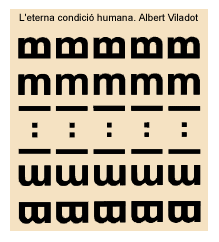

La poesia


1) Aproximació al terme "poesia"
No és fàcil descriure què és poesia. Tant el significat com l'ús que se'n fa són prou complexos i diversos. És clar que no qualsevol composició pot ser considerada poètica pel sol fet que rimin els versos, però també és veritat que molts jocs de paraules, descripcions, metàfores que sentim en la vida quotidiana i en la llengua més col·loquial tenen un clar contingut estètic i, per tant, també poètic.
La poesia és la descripció o evocació personal d'una impressió, d'un fet o experiència..., en què l'aspecte formal -les diferents maneres d'expressar-ho que ens ofereix la llengua- hi juga un paper determinant.
Posem un exemple: tots hem vist una posta de sol i, si busquem el seu significat al diccionari, trobarem una descripció tan senzilla o objectiva com l'acció de pondre's un astre. No obstant això, segurament que tots devem haver tingut l'experiència d'alguna posta de sol especial: per la seva resplendor, pel lloc on érem, per qui ens acompanyava... i fins alguna vegada hem comparat un fet decadent, la pèrdua d'alguna cosa a una posta de sol. Hem vist la realitat amb una sensibilitat, una bellesa diferent i per això hem volgut expressar-ho amb formes diferents; potser inconscientment, però en definitiva hem sentit, hem fet poesia.
I, si no, fixem-nos en els dos següents casos:
El poeta Gabriel Ferrater descriu una posta de sol com "El ponent excessiu":
| ||||||||

2) Poesia i vers
Sovint s'ha identificat la poesia amb l'ús del vers, però això no exclou que algunes proses tinguin un alt contingut poètic i que, de fet, es puguin considerar poesia. Mireu, si no, aquest fragment de Vicenç Altaió, igualment descrivint una posta de sol.
| ||||||||
3) A l'hora de llegir poesia
No cal dir que la lectura poètica requereix una disponibilitat i un esforç major a la d'altres lectures. Cal llegir i rellegir el poema, i no pas com si fos el diari; a poc a poc i si és possible en veu alta per copsar millor la seva mètrica, ritme, rima o possibles figures retòriques. Moltes vegades ens caldrà l'ús del diccionari o d'altres obres per comprendre millor el seu contingut; no oblidem que -depèn de l'autor i obra- sovint apareixen referències claus per al sentit del poema, vocabulari culte o artificiós i qui sap si polisèmic o rebuscat.
Repassem tot seguit alguns coneixements que ens ajudaran a l'hora de llegir i estudiar poesia. Hem de tenir present que si la poesia s'escriu en versos -les diferents ratlles que componen un poema- no és pas per casualitat. La mètrica té en compte principalment el nombre i la disposició de les síl·labes de què es compon un vers, així com de la seva relació amb la resta de versos. Per això, no serà el mateix si els versos d'una estrofa rimen i si tenen el mateix compte sil·làbic; si són versos blancs (no rimen) o si són lliures (no sotmesos a cap mesura mètrica).
|
Cal recordar que en la mètrica catalana les síl·labes d'un vers es compten fins a l'última síl·laba tònica. Tampoc no oblidem els diferents fenòmens de contacte vocàlic: la sinalefa, el hiat i l'elisió; que els versos d'art major (més de vuit síl·labes) poden presentar cesura (una petita pausa entre vers i que el divideix en dues parts o hemistiquis). | |
El ritme l'aporta una certa combinació entre síl·labes àtones i tòniques.
La rima -repetició dels sons del final de dos o més versos a partir de l'última síl·laba tònica- pot ser de dos tipus: assonant, quan només es repeteixen els sons vocàlics, i consonant, quan coincideixen tots els sons.
Un altre element important a tenir en compte és l'encavalcament, fenomen que fa referència al fet que una expressió o una mateixa frase es veu trencada pel canvi de vers.
Els versos s'anomenen pel seu nombre de síl·labes. Podem trobar des d'un monosíl·lab (cas excepcional) a versos de dotze síl·labes també anomentats alexandrins (solen presentar cesura a la sisena). Els versos més usats són els heptasíl·labs en art menor i el decasíl·lab en art major; aquest darrer amb cesura a la quarta, cinquena o sisena, depenent del seu origen (català, castellà o francès respectivament).
Igualment, quan els versos s'agrupen formant una unitat determinada, aquesta s'anomena estrofa. Les estrofes més conreades, per nombre de versos, poden ser:
- l'apariat (dos versos),
- el tercet (amb rima encadenada),
- la quarteta (amb versos d'art menor) o el quartet (d'art major),
- el quintet o quinteta,
- l'octava (ja de vuit versos),
- el sonet (de catorze versos, normalment formant dos quartets i dos tercets),
- el romanç (propi de la cançó popular, de nombre indeterminat de versos, però de set síl·labes i rima assonant en els versos parells).
Finalment, com ja hem apuntat, també podem trobar versos sense rima o ni tan sols regularitat mètrica. Són els versos blancs o versos lliures.
 Exercicis
Exercicis
1. Llegiu amb atenció els següents poemes i després responeu les preguntes plantejades:
| ||||||||
1) Per què creieu que el poema es titula "Plany"?
2) Analitzeu la mètrica:
a) De quina estrofa es tracta? Com es distribueix?
b) De quantes síl·labes són els versos? Hi ha cesura?
c) Com és la rima?
3) Quina figura retòrica hi ha en els dos primers versos? I al vers sis? I al vers tretze?
4) L'esquema expositiu propi del sonet es divideix de la següent manera:
1r quartet=exposició del tema.
2n quartet=complementació.
1r tercet=aprofundiment de la idea inicial.
2n tercet=desenllaç.
En el poema "Plany" es compleix aquesta estructura? Apunteu la idea principal de cada part.
5) Quin és el tema del poema? Feu-ne un breu comentari.

2. Feu el mateix treball en el poema següent:
| ||||||||
1) Quina relació s'estableix entre el nom de Diana i el contingut del poema?
2) En quins dos sentits pot ser entès el terme "trobador"?
3) Busqueu al text un clar exemple d'antítesi, al·literació i metàfora.
4) En definitiva, el poema pot ser vist com una declaració d'amor; en què es concreta?
3. Ara analitzarem un poema "diferent". Observeu el que segueix:

Aquest és un exemple de poema visual.
Tenint en compte el títol, quina és la clau per a la seva interpretació?